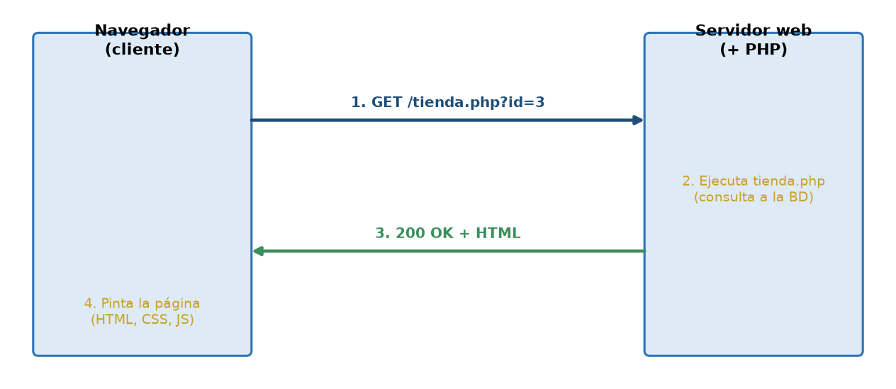
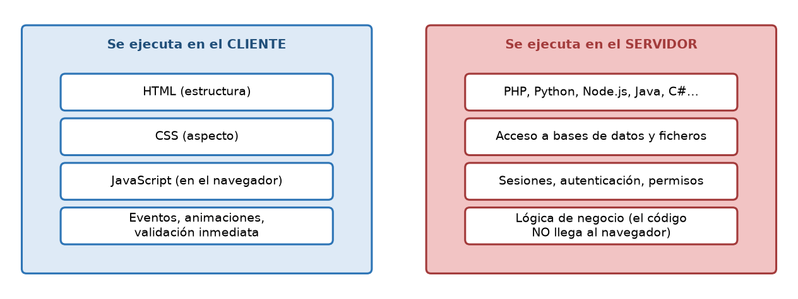
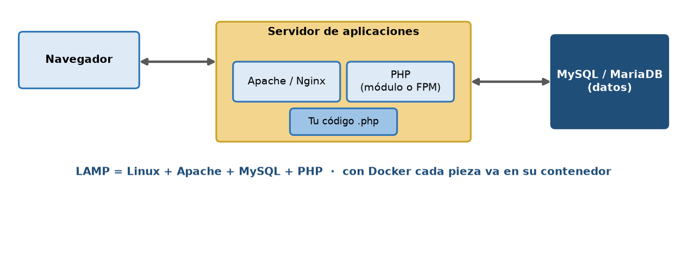
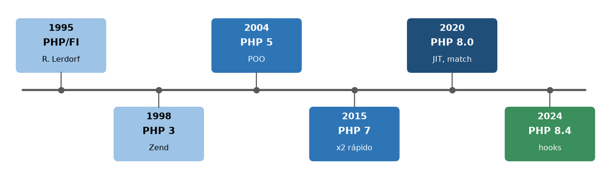

Inicio › UT1
Qué se trabaja
- Modelo cliente-servidor y protocolo HTTP: peticiones, respuestas, métodos y cabeceras.
- Servidor web, intérprete PHP y entorno de desarrollo en Docker.
- Primeras páginas con PHP dentro del HTML.
Pruébalo en el laboratorio
UT1 · PHP dentro del HTMLUT1 · Información de la petición
Figuras y capturas



